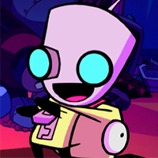
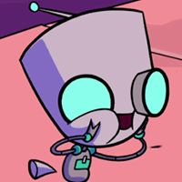

Este soy yo:
- 
-

- 
Para que me conozcas mejor:
Mi nombre GIR significa "Garbage Information Recollector" o en español "Recolector de Información Basura". Soy una Unidad de Captura e Información defectuosa ayudante de Zim que es mi mejor amigo. Fui construido a partir de piezas de un basurero (un chicle, un clip y un palo) y luego me dieron a Zim por los Todopoderosos Más Altos en lugar de un UCI normal. Las única diferencia entre las unidades UCI regulares y yo son la coloración única de las partes luminosas mi cuerpo (azul en vez de rojo), y una configuración diferente para los ojos y la boca rayada.
Algo sobre mi:
Soy hiperactivo, y me encanta la comida, sin importar si esta es comestible o no. Soy tan inteligente como cualquier humano (con excepción de Dib y Gaz), y me llevo muy bien con la gente del planeta tierra. Mis bocadillos favoritos de la Tierra son los tacos, taquitos, dulces, goma de mascar, chocolate, galletas, pastelitos, atún, waffles, pollo con mayonesa, pizza, bebidas azucaradas, puré de papas, panecillos, panqués y maíz.


{kind=link}
Gracias por visitarme
Espero que nos volvamos a ver pronto